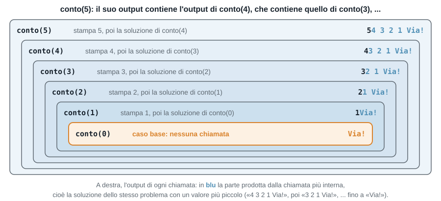
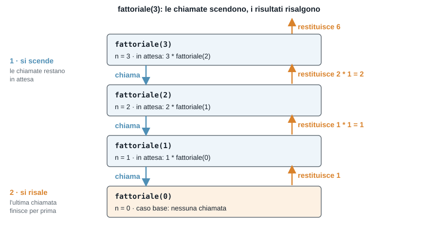
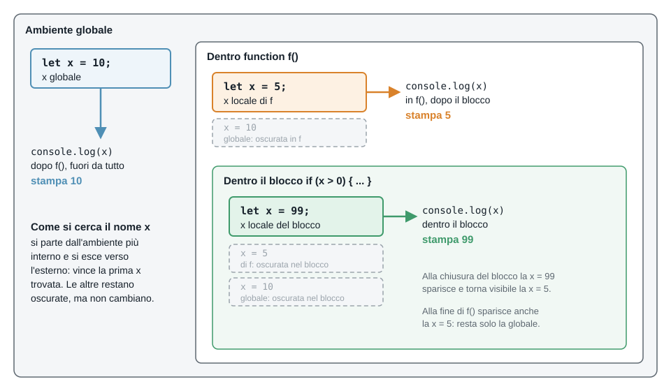

Fondamenti Teorici e Programmazione
Freccia destra o spazio per avanzare, freccia sinistra per tornare indietro — oppure i pulsanti "Indietro" e "Avanti" in fondo alla pagina.
Argomenti:
| Esercizio | Argomento |
|---|---|
| Esercizio 1 | Ricorsione: cosa stampa e in che ordine |
| Esercizio 2 | Ricorsione: trovare l'errore |
| Esercizio 3 | Fattoriale |
| Esercizio 4 | Somma dei quadrati |
| Esercizio 5 | Somma tra due numeri |
| Esercizio 6 | Le cifre di un numero |
| Esercizio 7 | Variabili locali e globali: cosa stampa |
| Esercizio 8 | Variabili e visibilità: errori e correzioni |
| Esercizio 9 | Cicli annidati: cosa stampa |
| Esercizio 10 | Figure di asterischi e numeri |
| Esercizio 11 | Tavola pitagorica |
| Esercizio 12 | Coppie di dadi |
| Esercizio 13 | Numeri primi |
| Esercizio 14 | Sfida: le terne pitagoriche |
Le regole sono le stesse delle volte scorse:
Una funzione è ricorsiva quando, nel suo corpo, richiama se stessa. Ogni chiamata lavora su un problema più piccolo, finché il problema diventa così semplice da avere una risposta immediata.
function conto(n) {
if (n == 0) { // caso base: ci si ferma
console.log("Via!");
} else { // passo ricorsivo: la funzione richiama se stessa
console.log(n);
conto(n - 1); // con un valore più piccolo
}
}
conto(5); // stampa: 5 4 3 2 1 Via!Il problema che conto(5) risolve contiene una copia più piccola di se stesso: l'output 5 4 3 2 1 Via! è 5 seguito dall'output di conto(4), cioè 4 3 2 1 Via!; questo a sua volta è 4 seguito dall'output di conto(3), e così via fino a conto(0), che stampa solo Via!. Come scatole una dentro l'altra:

Una funzione ricorsiva ha sempre due parti:
n - 1).Ogni chiamata ha le proprie variabili: il n della chiamata conto(5) è diverso dal n della chiamata conto(4). Le chiamate restano "in attesa" una dentro l'altra, e ritornano in ordine inverso: l'ultima chiamata (quella del caso base) finisce per prima.
Per fattoriale(3) (che vedremo nell'esercizio 3), ecco come le chiamate si aprono e si chiudono:

Per questo conta dove si scrive un'istruzione rispetto alla chiamata ricorsiva: quello che sta prima viene eseguito andando "in giù", quello che sta dopo viene eseguito al ritorno, "in su".
Attenzione: senza caso base, o con un passo che non si avvicina mai al caso base, le chiamate non finiscono più e JavaScript si ferma con l'errore RangeError: Maximum call stack size exceeded.
Per ogni programma, dite cosa stampa senza eseguirlo; poi eseguitelo per controllare.
A. Questi due programmi sono quasi uguali: cosa stampa ciascuno? Cosa cambia nell'output, e perché?
Programma 1
function conto(n) {
if (n == 0) {
console.log("Via!");
} else {
console.log(n);
conto(n - 1);
}
}
conto(3);Programma 2
function conto(n) {
if (n == 0) {
console.log("Via!");
} else {
conto(n - 1);
console.log(n);
}
}
conto(3);B.
function f(n) {
if (n > 0) {
console.log("entro", n);
f(n - 1);
console.log("esco", n);
}
}
f(2);C. Nel programma B, quante volte viene chiamata la funzione f (compresa la chiamata iniziale f(2))? E se si chiama f(5)?
Ciascuna di queste funzioni ha un problema. Dite cosa succede quando le si esegue (stampa all'infinito? un errore? un risultato strano?), e correggetele.
A.
function conto(n) {
console.log(n);
conto(n - 1);
}
conto(3);B.
function conto(n) {
if (n == 0) {
return;
}
console.log(n);
conto(n);
}
conto(3);C. Funziona con conto(3). Cosa succede con conto(-1)? E con conto(2.5)?
function conto(n) {
if (n == 0) {
return;
}
console.log(n);
conto(n - 1);
}D. Cosa stampa?
function somma(n) {
if (n == 0) {
return 0;
}
n + somma(n - 1);
}
console.log(somma(3));Il fattoriale di un numero naturale n è n! = n * (n-1) * (n-2) * ... * 1, con 0! = 1. Si può scrivere come formula ricorsiva:
0! = 1 (caso base)n! = n * (n-1)! se n > 0 (passo ricorsivo)A. Calcolate a mano 3! usando la formula ricorsiva: scrivete 3! = 3 * 2! = ... fino al caso base, poi tornate indietro sostituendo i valori.
B. Scrivere la funzione fattoriale(n) che restituisce n! usando la ricorsione. Provarla con 0, 1, 5, 10.
C. Per il codice qui sotto compilate la tabella con le chiamate che si fanno, dalla prima all'ultima, e con il valore che ognuna restituisce una volta finita.
function fattoriale(n) {
if (n == 0) {
return 1;
}
return n * fattoriale(n - 1);
}
console.log(fattoriale(3));| Chiamata | Cosa calcola | Restituisce |
|---|---|---|
fattoriale(3) | 3 * fattoriale(2) | |
fattoriale(2) | ||
fattoriale(1) | ||
fattoriale(0) |
D. Scrivere anche una versione con un ciclo for, fattoriale_ciclo(n), e confrontare i risultati delle due versioni.
Per scrivere una funzione ricorsiva ci si pongono sempre le stesse domande:
n - 1), come la uso per ottenere la risposta per n?Un esempio, la somma dei numeri da 1 a n:
somma(0) vale 0;somma(n) è n più la somma dei numeri da 1 a n - 1, cioè n + somma(n - 1).function somma(n) {
if (n == 0) {
return 0;
}
return n + somma(n - 1);
}Spesso la formula del problema è già ricorsiva (fattoriale, somma, ...): in questi casi la funzione si scrive "copiando" la formula. Ricordate il return anche nel passo ricorsivo!
La somma dei quadrati dei primi n numeri naturali si può definire per ricorrenza:
Q(0) = 0Q(n) = Q(n-1) + n² se n > 0A. Scrivere la funzione ricorsiva sommaQuadrati(n) che restituisce Q(n), cioè 1² + 2² + ... + n² (non deve stampare). Ad esempio sommaQuadrati(3) restituisce 14.
B. Nel programma principale, stampare Q(3), Q(10) e Q(100). Qual è il caso base? Cosa cambia, rispetto alla funzione somma(n) del Recap 2, nel passo ricorsivo?
A. Scrivere la funzione ricorsiva sommaTra(a, b) che restituisce la somma di tutti gli interi da a a b (estremi inclusi), e 0 se a > b. Ad esempio sommaTra(3, 6) restituisce 18 (3 + 4 + 5 + 6).
B. Qual è il caso base? Qui cosa cambia a ogni chiamata ricorsiva: a, b o entrambi?
C. Usando sommaTra, scrivere una riga che stampa la somma dei numeri da 1 a 100, e una che stampa la somma dei numeri da 50 a 100.
Nel laboratorio 1 (esercizio 1.7) avete scritto un programma che stampa le unità, le decine e le centinaia di un numero a tre cifre:
let numero = Number(prompt("Inserire il numero intero a 3 cifre: "));
let unità = numero % 10;
let decine = ((numero - unità) / 10) % 10;
let centinaia = ((numero - unità - decine * 10) / 100) % 10;
console.log("unità =", unità);
console.log("decine =", decine);
console.log("centinaia =", centinaia);A. Provatelo con 234 e 571. Poi riflettete: per ottenere le decine si deve prima togliere l'unità, per le centinaia si devono togliere unità e decine, e per le migliaia? La formula diventa sempre più lunga. C'è un modo più semplice?
B. Basta sapere fare due cose:
n % 10;Math.floor(n / 10) (ad esempio da 572 si ottiene 57).La penultima cifra di 572 (la 7) sarebbe l'ultima se non ci fosse l'ultima: è l'ultima cifra di 57. E la terzultima (la 5) è l'ultima cifra di 5, cioè del numero a cui si sono tolte due cifre. Seguite questo schema per 45292:
| Passo | n | ultima cifra (n % 10) | n senza l'ultima cifra |
|---|---|---|---|
| 1 | 45292 | ||
| 2 | |||
| 3 | |||
| 4 | |||
| 5 |
Poi riscrivete il programma dell'esercizio 1.7 usando solo queste due operazioni: prendete l'ultima cifra (unità), togliete l'ultima cifra, riprendete l'ultima cifra (decine), e così via. Confrontate con le formule del laboratorio.
C. Se sappiamo prendere l'ultima cifra e ridurre il numero, possiamo ripetere il procedimento fino alla cifra più a sinistra. Questo è un problema ricorsivo: la cifra in posizione k di n (k = 0 per le unità, 1 per le decine, 2 per le centinaia, ...) è la cifra in posizione k - 1 del numero senza l'ultima cifra. Scrivere la funzione ricorsiva cifra(n, k). Qual è il caso base? Poi riscrivere il programma dell'esercizio 1.7 usando cifra: dopo aver letto numero, stampare unità, decine e centinaia con tre chiamate a cifra, una per riga.
D. Scrivere primaCifra(n), che restituisce la cifra più a sinistra di n: primaCifra(45292) restituisce 4. Suggerimento: si tolgono cifre a destra finché ne resta una sola.
E. Scrivere numeroCifre(n), che restituisce quante cifre ha n. Ad esempio numeroCifre(472) restituisce 3.
F. Scrivere sommaCifre(n), che restituisce la somma delle cifre di n. Ad esempio sommaCifre(472) restituisce 13.
In questo esercizio n è un intero >= 0. Un numero con una sola cifra è n < 10.
Lo scope di una variabile è la parte di programma in cui la variabile esiste e si può usare.
n;let, una variabile esiste solo nel blocco { ... } in cui è dichiarata: anche la i di un for o una variabile dentro un if.Se una variabile locale ha lo stesso nome di una variabile esterna, la locale oscura (in inglese shadowing) quella esterna: dentro la funzione il nome si riferisce alla locale, e la globale non è raggiungibile e non viene toccata.
let x = 10; // globale
function f() {
let x = 5; // locale a f: oscura la x globale
if (x > 0) {
let x = 99; // locale al blocco: oscura la x di f
console.log(x); // 99
}
console.log(x); // 5: il blocco è finito
}
f();
console.log(x); // 10: la x globale non è cambiataOgni livello (programma, funzione, blocco) ha le sue variabili. Per trovare il significato di x, JavaScript parte dal livello più interno e risale verso l'esterno, fermandosi alla prima x che trova.

Senza il let la situazione è diversa: l'assegnamento modifica la variabile globale.
function g() {
x = x + 1; // niente let: usa la x globale
}
g();
console.log(x); // 11Lo stesso vale per i parametri: nella funzione h(x) il parametro x è una variabile locale che oscura la x globale, e cambiarlo non cambia il valore fuori.
function h(x) {
x = x * 2;
return x;
}
console.log(h(3), x); // 6 11: la x globale è ancora 11Regole pratiche:
g) rende il programma difficile da seguire: se serve un valore, meglio passarlo come parametro e restituire il risultato con return.Per ogni programma, dite cosa stampa senza eseguirlo; se c'è un errore, dite quale e perché. Poi eseguitelo per controllare.
A.
let x = 1;
function f() {
let x = 2;
console.log(x);
}
f();
console.log(x);B.
let x = 1;
function g() {
x = x + 10;
}
g();
g();
console.log(x);C.
function raddoppia(n) {
n = n * 2;
return n;
}
let n = 5;
let r = raddoppia(n);
console.log(n, r);D.
let x = 10;
if (x > 5) {
let x = 20;
x = x + 1;
console.log(x);
}
console.log(x);E.
for (let i = 0; i < 3; i++) {
console.log(i);
}
console.log(i);A. Cosa stampa questo programma? Se c'è un problema, dite quale e correggetelo in modo da stampare il risultato.
function calcola() {
let risultato = 5 * 2;
}
calcola();
console.log(risultato);B. Cosa stampa ciascuno di questi due programmi? Se c'è un problema, dite quale e perché.
// programma 1
let y = 3;
function stampa() {
console.log(y);
}
stampa();// programma 2
function stampa() {
console.log(y);
}
stampa();
let y = 3;C. La funzione dovrebbe restituire quanti numeri ci sono da n fino a 1 (quindi conta(3) dovrebbe dare 3). Cosa restituisce davvero? Se non è il valore atteso, dite perché e correggetela.
function conta(n) {
let passi = 0;
if (n > 0) {
passi = passi + 1;
conta(n - 1);
}
return passi;
}
console.log(conta(3));D. Questa funzione modifica la variabile globale totale. Riscrivetela in modo che non tocchi variabili globali: riceva il totale come parametro e restituisca il nuovo totale.
let totale = 0;
function aggiungi(x) {
totale = totale + x;
}
aggiungi(3);
aggiungi(4);
console.log(totale); // 7Un ciclo può contenere un altro ciclo. Il ciclo interno viene eseguito per intero a ogni giro del ciclo esterno. Esempio: le prime cinque righe delle tabelline del 2, del 3 e del 4.
for (let i = 2; i <= 4; i++) { // esterno: una tabellina per giro (2, 3, 4)
let riga = ""; // si azzera a ogni giro esterno
for (let j = 1; j <= 5; j++) { // interno: 5 giri, ricomincia ogni volta
riga = riga + (i * j) + " ";
}
console.log(riga); // una riga per ogni tabellina
}2 4 6 8 10
3 6 9 12 15
4 8 12 16 20Il ciclo esterno fa 3 giri (i vale 2, 3, 4); a ognuno, il ciclo interno fa tutti i suoi 5 giri (j da 1 a 5) e costruisce una riga.
3 * 5 = 15;i, j) devono avere nomi diversi;riga) vanno inizializzate dentro il ciclo esterno, prima del ciclo interno;i ne ha i: il ciclo interno va da 1 a i);i e j a ogni giro.Per ogni programma, dite cosa stampa senza eseguirlo (aiutatevi con una tabella dei valori di i e j); poi eseguitelo per controllare.
A.
for (let i = 1; i <= 3; i++) {
for (let j = 1; j <= 2; j++) {
console.log(i, j);
}
}B.
for (let i = 1; i <= 3; i++) {
let riga = "";
for (let j = 1; j <= 3; j++) {
riga = riga + (i * j) + " ";
}
console.log(riga);
}C. Quanto vale conta alla fine? E se i due cicli arrivassero a 100 invece che a 4?
let conta = 0;
for (let i = 1; i <= 4; i++) {
for (let j = 1; j <= i; j++) {
conta++;
}
}
console.log(conta);D. Questo programma doveva stampare un triangolo di asterischi, ma non fa quello che ci si aspetta. Cosa stampa? Come si corregge?
let riga = "";
for (let i = 1; i <= 3; i++) {
for (let j = 1; j <= i; j++) {
riga = riga + "*";
}
console.log(riga);
}Chiedere all'utente un intero n >= 1 (facendo ripetere la domanda finché non è valido) e stampare le seguenti figure. Per n = 4:
A. Un quadrato di asterischi, n righe di n asterischi:
****
****
****
****B. Un triangolo rovesciato, con n asterischi nella prima riga e uno nell'ultima:
****
***
**
*C. Un triangolo di numeri: nella riga i ci sono i numeri da 1 a i, separati da uno spazio:
1
1 2
1 2 3
1 2 3 4D. Un triangolo allineato a destra, con n righe: nella riga i ci sono n - i spazi seguiti da i asterischi:
*
**
***
****Suggerimento: per ogni figura chiedetevi quanti giri fa il ciclo interno in funzione di i; poi, se serve, costruite la riga come stringa.
La tavola pitagorica mostra i prodotti i * j per i e j da 1 a n.
A. Chiedere n all'utente e stampare la tavola, una riga per ogni i, con i numeri allineati in colonne. Ad esempio per n = 5:
1 2 3 4 5
2 4 6 8 10
3 6 9 12 15
4 8 12 16 20
5 10 15 20 25Suggerimento: String(x).padStart(4) restituisce il numero x come stringa, riempita a sinistra con spazi fino a 4 caratteri.
B. Stampare solo la parte "sopra la diagonale" (j >= i), lasciando vuote le caselle sotto. Per n = 5:
1 2 3 4 5
4 6 8 10
9 12 15
16 20
25C. Calcolare e stampare la somma di tutti i numeri della tavola per n = 10. C'è una formula per ottenerla?
Si lanciano due dadi a sei facce. Ogni risultato è una coppia (a, b) con a e b da 1 a 6.
A. Stampare tutte le coppie la cui somma è 7, e dire quante sono. Quante coppie in tutto si controllano?
B. Chiedere all'utente una somma s (facendo ripetere la domanda finché non è un intero tra 2 e 12), e stampare quante coppie danno quella somma. Provate con 2, 7 e 12.
C. Stampare, per ogni somma da 2 a 12, quante coppie la producono. Quale somma è la più frequente?
Un numero n >= 2 è primo se non ha divisori tra 2 e n - 1.
A. Stampare tutti i numeri primi da 2 a 50 e quanti sono. Per ogni n il ciclo interno cerca un divisore, usando una variabile flag (come nell'esercitazione 3).
B. Il ciclo interno continua a girare anche dopo aver trovato un divisore, ma non serve più. Aggiungete un break per fermarlo, e verificate con un contatore globale che il numero di giri interni diminuisce. Di quanto?
Sfida: le terne pitagoriche. Una terna pitagorica è una terna di interi positivi a < b < c tali che a² + b² = c², ad esempio 3, 4, 5 (9 + 16 = 25).
A. Stampare tutte le terne pitagoriche con c <= 20, e dire quante sono.
B. Quante volte viene controllata la condizione a² + b² == c²? Verificatelo con un contatore. Come cambia se b parte da a + 1 e c da b + 1, invece che da 1?